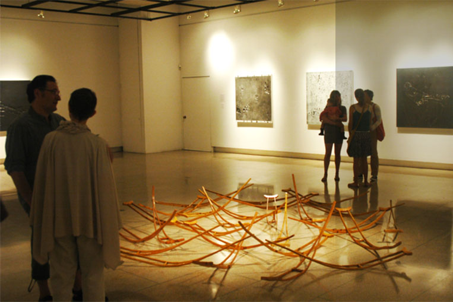

Skip to main content
Whitman College logo
Alumni
•
Community
•
Faculty
•
Parents
•
Staff
•
Students
Give Now
Quick Links
Bookstore
Sexual Misconduct Policy Something Something
Center for Writing and Speaking
Employment
Giving
Grievance Policy
News
Right to Know
Sexual Misconduct Policy
A-to-Z Index
Campus Map
Event Calendar
Library
myWhitman
A-to-Z
Map
Events
Library
myWhitman
About
Campus Map
Campus and Community
Campus Sustainability
This link is going to be a long one to test the line breaks
Fast Facts
Leadership and Organization
Contact Us
Portaits of the Past
Whitman Hallmarks
A featured page that will have just about this much text describing it.
Learn More
Academics & Library
Academic Calendar
Academic Resource Center
Catalog
Departments and Programs
Encounters
The Faculty
Fellowships and Grants
Liberal Arts Education
Penrose Library
Placement Tests
Whitman Debate

A featured page that will have just about this much text describing it.
Learn More
Admission & Aid
Apply
Contact Us
Financial Aid
Learn More
Request Information
Visit Whitman
Whitman on the Road
Why Whitman?
A featured page that will have just about this much text describing it.
Learn More
Athletics
Club Sports
Intramural Sports
Men's Basketball
Swimming
Varsity Sports
W Club
Women's Basketball
A featured page that will have just about this much text describing it.
Learn More
Student Life
Career Services
Club Sports and Intramurals
Green Life
Living at Whitman
Orientation
Student Activities
Student Clubs and Organizations
Student Services
A featured page that will have just about this much text describing it.
Learn More
Audiences
Alumni
Parents
Students
Faculty & Staff
Community
Quick Links
A-Z Directory
Bookstore
Campus Map
Contact Us
Employment
Event Calendar
Giving
Grievance and Sexual Misconduct Policy
Library
myWhitman
News
Right to Know
Site
People
Search
http://whitman.edu/search
https://webapp.whitman.edu/directory/
A to Z Index
»
About Whitman
»
Campus and Community